Presentation Models in Windows
Reference and Basic Terms
To understand this material, it is important to grasp the basic concepts:
- DWM (Desktop Window Manager) – the Windows desktop compositor. Put simply, DWM takes the images of all open windows, layers them over one another (composition), and sends the final result to the display. The key detail: DWM always uses vertical synchronization, which adds at least one frame of latency if the application goes through it.
- DXGI (DirectX Graphics Infrastructure) – a low-level subsystem that handles adapter enumeration, SwapChain creation, and frame presentation. In DirectX 10, 11, and 12, DXGI is responsible for displaying the image on screen. Direct3D 9 and 9Ex use their own presentation API rather than DXGI.
- SwapChain (a chain of buffers) — the mechanism a Direct3D application uses to arrange rendered frames in sequence for display. You may have heard of double or triple buffering and vertical synchronization (V-Sync). These are all properties of a DXGI SwapChain, along with framebuffer resolution, format, and color space.
Presentation Model
This describes the mechanism (path) used to deliver rendered game frames to the display.
DXGI provides four different swap effects that a game can use for its swapchain: Discard (Flip), Sequential (Flip), Discard (BitBlt), and Sequential (BitBlt). The final presentation path depends on the application's SwapEffect and a range of optimizations.
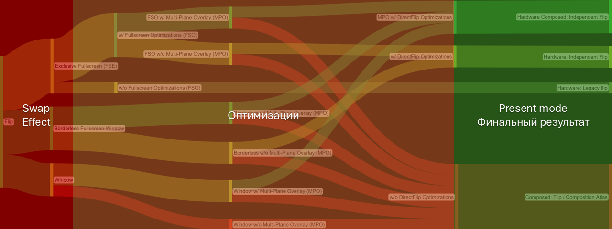
This sounds a little confusing, but the idea is simple: a game can configure different swap effects for its swapchain. The Swap Effect determines how a rendered frame should be displayed from the game's perspective. However, the presentation model actually used depends on many factors, not just the selected effect.
History of Presentation Models
Windows 7
In the Windows 7 era, the main methods were windowed BitBlt and fullscreen Flipping. For years, gamers followed a golden rule: if you want minimal input lag and smooth gameplay, use Full-Screen Exclusive mode.
Windowed mode was synonymous with poor performance. The reason lay in the limitations of the BitBlt model: instead of going directly to DWM, the game used an intermediate surface to copy the frame. This extra copy operation meant additional video memory load and noticeable latency, with DWM adding another frame of composition latency on top.
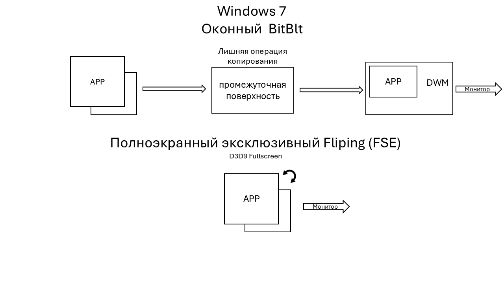
FSE (Full-Screen Exclusive): In this mode, the game took control of display output, bypassing DWM entirely. The compositor effectively stopped rendering the desktop for that monitor. This delivered maximum speed, but prevented instant minimization and the use of windowed overlays.
The Windows 8 Revolution
Windows 8 introduced windowed Flip. Instead of copying the frame as in BitBlt, the system and applications now simply exchange references to regions of video memory. This removed the extra copy operation, but DWM composition latency remained.
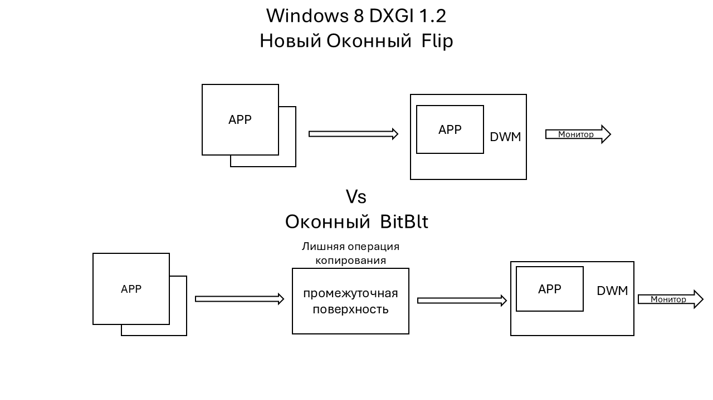
The Peak of Optimization: DirectFlip and iFlip
These improvements culminated in DirectFlip. It lets DWM take a step back and pass the game's frame directly to the display controller, bypassing the overall DWM composition stage.
When DirectFlip is successfully activated, the program switches to Independent Flip mode (iFlip Immediate*). Technically, it remains windowed, but its performance and responsiveness are comparable to traditional Full-Screen Exclusive mode (FSE).
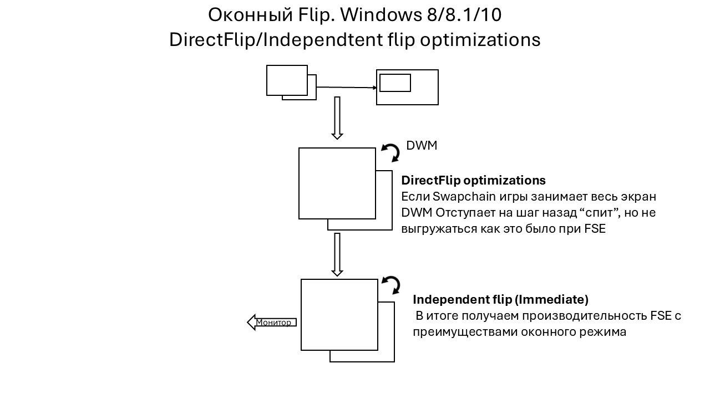
To activate standard DirectFlip optimizations, the game's swapchain must match the desktop resolution (cover the entire screen), and no other windows or overlays may appear over the game window.
Windows 10 and 11 Optimizations for Older Games
The first is: FSO (Full-Screen Optimization) — a feature added in Windows 10 that performs a very important task for the user: it converts any game using Full-Screen Exclusive Flipping (FSE) to windowed Flip. This conversion enables all the benefits of Independent Flip. A key feature of FSO is fullscreen emulation (eFSE), achieved by changing the system's display resolution and refresh rate to match the running game's requirements. It can also convert legacy D3D9 Fullscreen.
The second is: Optimizations for windowed games — a feature added in Windows 11 22H2 that converts older games (DirectX 10–11) using windowed BitBlt to modern windowed Flip. This lets those games benefit from Independent Flip as well. It does NOT work with D3D9.
Consequently, on modern Windows 11 with all optimizations enabled, the windowed Flip model applies to all games running through DXGI. A game in Independent Flip gets the best performance.
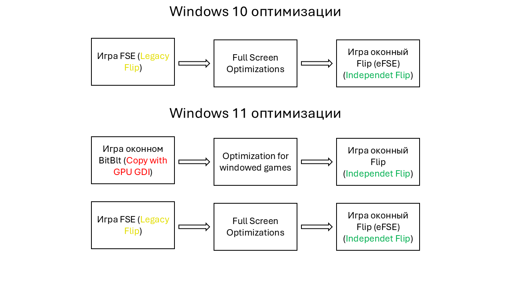
Multi-Plane Overlay
Multi-Plane Overlay (MPO) – uses additional dedicated hardware scanout planes in the GPU that can receive application frames. The graphics card then outputs them to the display itself, taking over the composition work.
This lets games bypass DWM in various mixed and windowed modes, eliminating the display latency that would otherwise occur. With MPO, you do not have to follow the rules for activating standard DirectFlip.
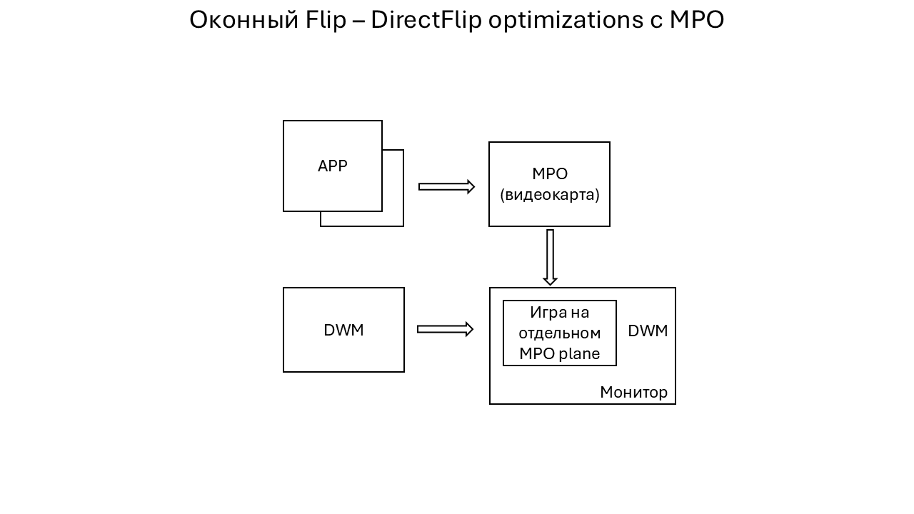
Minimum graphics card requirements:
- AMD: Radeon RX Vega (GCN 5.0)
- Intel: HD Graphics 510-515 (Core 6th gen)
- Nvidia: GTX 16/RTX 20 series (Turing)
Support also depends on the GPU and display configuration. Unusual driver or display settings can disable MPO support, such as custom GPU scaling (NIS/RSR/integer scaling, etc.). We will cover this separately in the section on MPO and Composed: Flip problems.
Presentation Models in Practice
Now that we have covered all the optimizations, let us return to analyzing the different scenarios of Presentation Model.
The diagrams use the following simplification: even with MPO support enabled, on some systems a game may still be reported as using “Hardware: Independent Flip”, although in this case it generally behaves and functions exactly like “Hardware Composed: Independent Flip”.
Flip (D3D11/D3D12*)
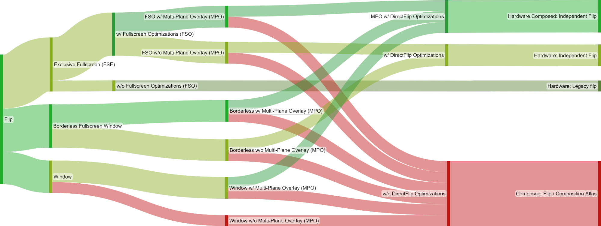
The colored columns in the chart represent successive stages, described in detail in this list.
For a game using the Flip swap effect, the specific presentation model depends on several factors:
- 1. The display mode requested by the game.
- (*) The section on Full-Screen Exclusive mode (FSE) does not apply to games using DirectX 12, because their “exclusive mode” is only emulated (eFSE). In this mode, the Windows desktop temporarily changes its resolution, refresh rate, and color space to those requested by the game, but otherwise it works exactly like ordinary borderless fullscreen.
- 2. The Full-Screen Optimizations (FSO) toggle (relevant only to games running in Full-Screen Exclusive mode (FSE)).
- 3. Hardware support for Multi-Plane Overlay (MPO).
- 4. Finally, whether the swapchain and system meet the requirements for activating DirectFlip:
- DirectFlip: Your swapchain buffers match the screen dimensions, and the window's client area covers the entire screen. The application's own swapchain is used for display output instead of DWM's swapchain.
- DirectFlip with panel fitters (requires MPO): The window's client area covers the screen, and the swapchain buffer dimensions are within a hardware-dependent scaling factor (for example, from 0.25x to 4x) of the screen dimensions. The GPU scales the buffer as it is sent to the display.
- DirectFlip with Multi-Plane Overlay (requires MPO): Your swapchain buffers are within a hardware-dependent scaling factor of the window dimensions. DWM reserves a dedicated hardware scanout plane for your application, which is then displayed and, if necessary, stretched onto a subregion of the screen with alpha blending.
BitBlt (D3D11)
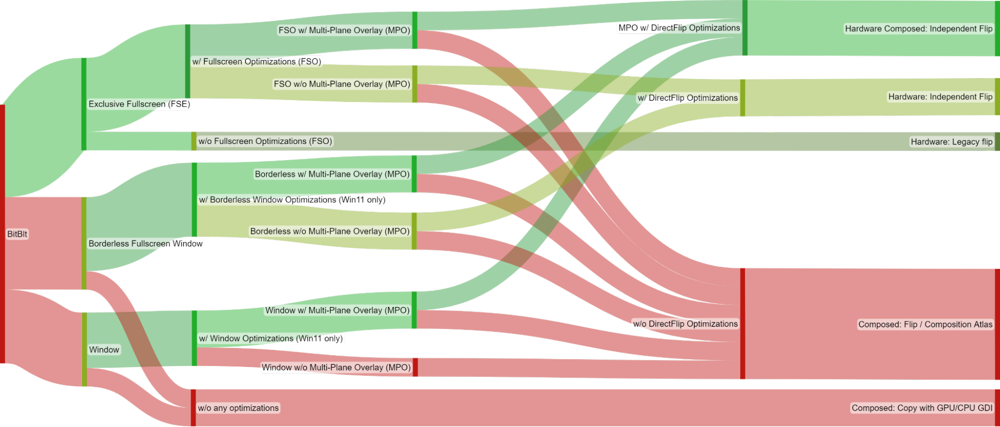
For a game using the legacy BitBlt swap effect, the specific presentation model depends on several factors:
The colored columns in the chart represent successive stages, described in detail in this list.
- 1. The display mode requested by the game.
- 2. The Full-Screen Optimizations (FSO) toggle (relevant only to games running in Full-Screen Exclusive mode (FSE)).
- The Optimizations for windowed games toggle (available in Windows 11 and relevant only to games running in one of the two windowed modes).
- 3. Hardware support for Multi-Plane Overlay (MPO).
- 4. Finally, whether the swapchain and system meet the requirements for activating DirectFlip:
- DirectFlip (requires FSO or windowed game optimizations): The game's swapchain matches the screen dimensions, and the window's client area covers the entire screen. Instead of using DWM for display output, the application's own SwapChain is used.
- DirectFlip with panel fitters (requires MPO + FSO/windowed game optimizations): The window's client area covers the screen, and the swapchain buffer dimensions are within a hardware-dependent scaling factor (for example, from 0.25x to 4x) of the screen dimensions. The GPU's scanout hardware scales the buffer as it is sent to the display.
- DirectFlip with Multi-Plane Overlay (requires MPO + FSO/windowed game optimizations): Your swapchain buffers are within a hardware-dependent scaling factor of the window dimensions. DWM reserves a dedicated hardware scanout plane for your application, which is then displayed and, if necessary, stretched onto a subregion of the screen with alpha blending.
The Result
All games running through DXGI (from DirectX 10 to DirectX 12) will use the Flip presentation model, provided you have Windows 11 and ALL optimizations enabled.
Without hardware MPO support, it is essential to follow the rules for activating standard DirectFlip.
MPO gives you complete freedom. You can select any resolution, resize the application's swapchain area, and display overlays, while the application continues to run reliably in Independent Flip mode.
Older games based on classic DirectX 9 require either fullscreen mode with FSO or, much preferably, a wrapper such as DXVK or dgVoodoo2. Moving to a modern API enables the Flip presentation model and the benefits of borderless windowed/fullscreen mode instead of the compromise of FSO (eFSE).
| Present Mode | Description |
|---|---|
| Hardware: Independent Flip | The application uses the Flip model and does not own the screen exclusively, but still flips the displayed surface directly every frame, bypassing the extra DWM stage. |
| Hardware Composed: Independent Flip* |
The application uses the Flip model and has been assigned a hardware overlay plane, bypassing the extra DWM stage. |
| Hardware: Legacy Flip | The application has taken full control of the screen (Full-Screen Exclusive mode) and flips the displayed surface every frame. |
| Composed: Flip | The application runs in windowed mode, uses the Flip model, and passes its surfaces to DWM for subsequent composition (1+ frames of latency in any case). |
| Composed: Copy with GPU GDI | The application runs in windowed mode and uses BitBlt (1+ frames of latency in any case). |
Window Modes in Modern Games
Games do not always label these correctly, but here are the characteristics that let you identify the mode in use:
- Emulated Fullscreen Exclusive (DX12) / a game running through FSO — the game uses windowed Flip, with the Windows desktop simply changing its resolution, refresh rate, and color space temporarily to those requested by the game. Useful if you have no MPO and want to play at a lower resolution than the desktop. Developers increasingly omit this mode from the settings because it is inferior to ordinary windowed mode.
- Fullscreen Window — the game window is scaled to the system resolution. The best option for native resolution, or for a non-native resolution if you want stretching, but MPO is mandatory in that case.
- Borderless Window — the game window is displayed as is, without scaling or borders (the best option for native resolution).
- Bordered Window — the game is displayed as an ordinary window with borders.
- Unity/Unreal Engine Window — these engines have a special window mode in which the game's swapchain always depends on the system resolution. Changing the resolution in the game settings changes the rendering resolution, but not the swapchain. This is why most UE games do not let you change resolution in windowed mode.
Monitoring Present Mode
RTSS is the best option for monitoring.
- Download and install the latest RTSS version from the official website
- Download the overlay file and place it in C:\Program Files (x86)\RivaTuner Statistics Server\Plugins\Client\Overlays
- Open RTSS and click Setup:
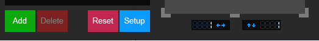
- Open the Plugins tab, enable OverlayEditor, and open it by double-clicking it (or using Setup below):
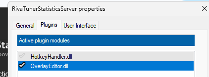
- Then choose Layouts -> Load -> select the downloaded .ovl file:
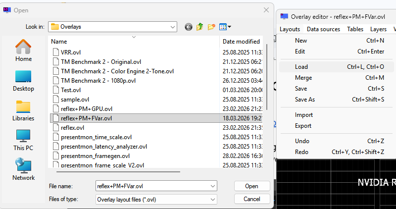
- Close OverlayEditor, click Apply, and launch the game.
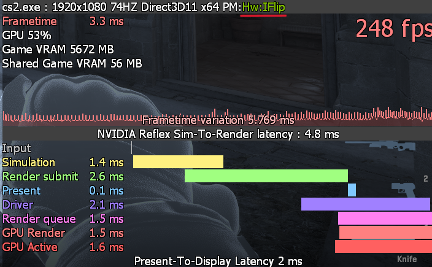
Presentation Model:
👍 Minimal latency if it shows
- Hardware: Independent Flip
- Hardware Composed: Independent Flip
- Hardware: Legacy Flip
- Hardware: Legacy Copy to front buffer
👎 Unwanted latency
- Composed: Flip
- Composed: Copy with GPU GDI
- Composed: Copy with CPU GDI
Reflex Sim-to-Render latency — the time interval from the start of Simulation to completion of the frame on the GPU.
Reflex markers also provide detailed information about the game pipeline from Sim to the end of GPU Render, but cannot see what happens at the composition stage (Composite).
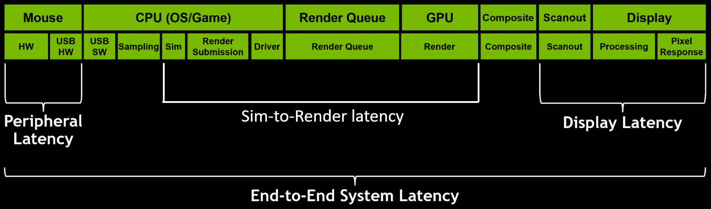
Present-To-Display — the time between the Present() call and the framebuffer change (sending it to the monitor).
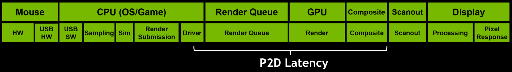
Checking MPO Operation
- Download and install Special K
- Launch Special K (SKIF) and open the Hardware tab
- Check whether MPO is working
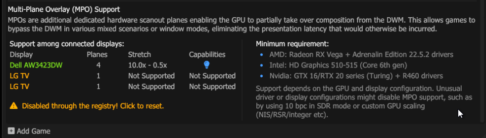
SKIF will immediately offer to reset your registry settings if you have been following optimization advice 😊
Right-click the MPO area to refresh it in real time.
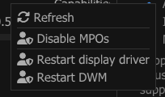
Checking In-Game
With the RTSS overlay running, open Xbox Game Bar (Win+G). If the game remains in independent flip, MPO is working.
Without MPO
With MPO
MPO and Composed Flip Problems
If your graphics card has hardware support for MPO but Special K does not report it, the problem is most likely caused by one of the following:
Problems most often arise from excessive user tweaking: attempts to optimize, remove, or reconfigure something in the driver have the opposite effect and only make things worse.
- Disabling FSO and Optimizations for windowed games. This is strongly discouraged! Disabling them permanently blocks older games from using the Flip model.
- Do not change Adjust Desktop Size and Position unnecessarily. Changes here can break MPO.
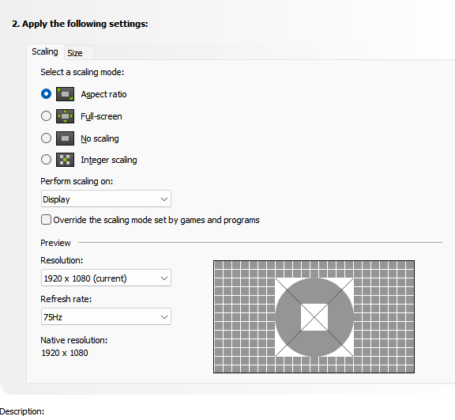
Default settings - MPO disabled through the registry following advice from the internet.
- Recording and Instant Replay in NVIDIA app/AMD Adrenalin with desktop recording enabled break MPO.
- Do not use NIS (the driver-level upscaler). Enabling it immediately breaks MPO system-wide.
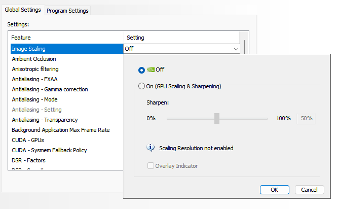
- The Nvidia driver assigns all MPO planes to just one monitor, which may leave your primary monitor without them.
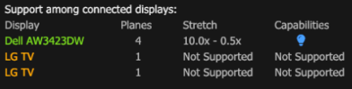
To restore MPO on the primary monitor, set it as primary in NVCP/NVAPP OR switch the primary designation to the second monitor and then back to the main one.
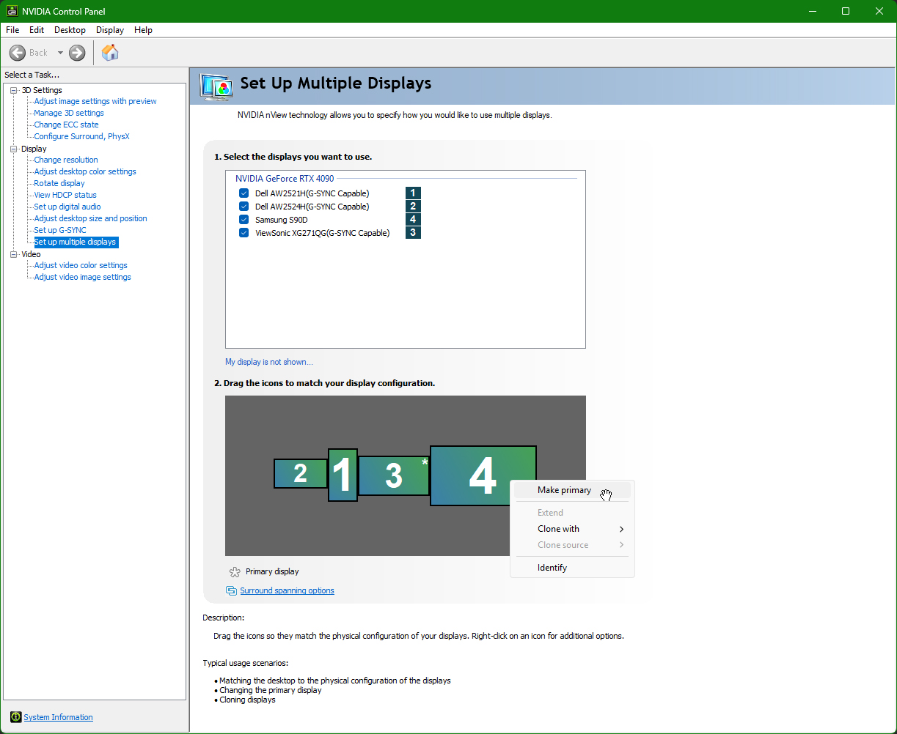
- The Discord overlay breaks MPO and VRR.
- The Overwolf overlay can cause Composed Flip if you do not have MPO.
- RTX Video Super Resolution and RTX Video HDR disable MPO while video is playing/the browser is running.
- WGC capture causes Composed Flip if there is no MPO.
- Playing 4K video in a browser can break MPO on some systems.
- DSC (Display Stream Compression) disables MPO on Nvidia graphics cards older than the RTX 5000 series. DSC calculator.
- For older games that natively use BitBlt, switching window modes triggers a transition to Composed Flip because these applications do not call ResizeBuffers during the switch. You need to restart the game or change the resolution and then change it back.
- The Windows activation watermark acts as an overlay and causes Composed Flip if there is no MPO.
- 10-bit SDR breaks MPO on older Windows versions. This was fixed in Windows 11 24H2 and current Nvidia drivers.
- Laptops with a MUX switch. Switching to discrete graphics mode (dGPU only) on some laptops causes MPO support to be lost.
- Two monitors (WIP) ...........
- Windows Game Mode and Xbox Game Bar disabled. They play an important role in activating the Game Mode power plan, Optimizations for windowed games, and Windows VRR.
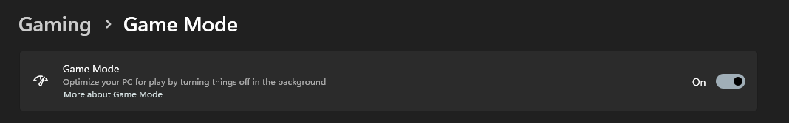
If the game is not recognized, you can mark it as a game manually in Xbox Game Bar.
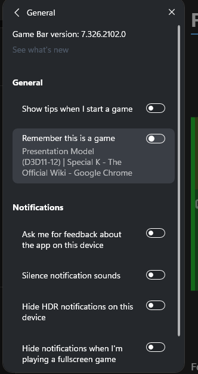
(DL)Dsr
Since (DL)DSR disables MPO, it is essential to follow the standard DirectFlip rules strictly.
To avoid Composed: Flip, always set the (DL)DSR resolution in Windows settings before launching the game.
OpenGL and Vulkan: DXGI Interop
Natively on Windows, OpenGL and Vulkan games have two paths: fullscreen in FSE (Hardware: Legacy Flip) and windowed in BitBlt (Composed: Copy with GPU GDI). In other words, these games do not work through the DXGI subsystem directly.
Nvidia Driver Interop (Layered on DXGI Swapchain)
To convert a Vulkan or OpenGL game, open the game profile in NVAPP/NVCP and select Vulkan/OpenGL Present Method: Prefer layered on DXGI Swapchain.
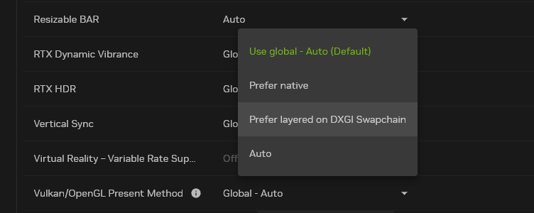
Special K Interop (OpenGL Only)
Because Nvidia's built-in interop has very high GPU overhead in OpenGL (for example, in Minecraft with demanding shaders, performance can drop to less than half), for OpenGL I recommend using Special K.
All you need to do is add the game's .exe executable to its launcher (SKIF) and launch the game through it. Special K will inject itself and configure the DXGI SwapChain automatically.
If Special K has injected successfully, you will see OpenGL-IK in its control panel. This means Special K's own interop is working.
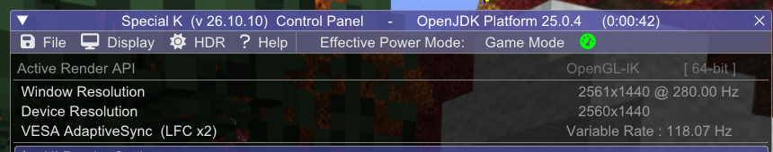
DirectX 9 Wrappers (dgVoodoo2 and DXVK)
Older games based on classic DirectX 9 cannot use the modern Flip model natively. Moving to a modern API enables DXGI SwapChain and the benefits of borderless windowed/fullscreen mode.
dgVoodoo2
dgVoodoo2 — a wrapper that translates legacy graphics APIs (DirectDraw, Direct3D 1–9, and Glide) to Direct3D 11/12. It moves older games to a modern DXGI SwapChain, enabling the benefits of borderless windowed mode and the Flip presentation model.
- Download the dgVoodoo2 archive from the developer's official website.
- Extract the archive and copy the control panel file
dgVoodooCpl.exeand the configuration filedgVoodoo.confto the game root folder (next to the main.exefile). - Determine whether the game is 32-bit or 64-bit (the vast majority of older DirectX 9 games are 32-bit, i.e., x86).
- Open the
MS/x86/folder inside the downloaded archive (orMS/x64/if the game is 64-bit). - Copy the
D3D9.dlllibrary (for DirectX 9 games) orD3D8.dll(for DirectX 8) to the game root folder next to the.exefile.
- Open the
- Launch the game and check the result with RTSS:
- Instead of the old D3D9, the API line will show D3D11.
- Presentation Model will switch to Hardware: Independent Flip.
- A dgVoodoo watermark will appear in the bottom-right corner of the screen, indicating that rendering has been successfully intercepted.
- To remove the watermark: open
dgVoodooCpl.exein the game folder, go to the DirectX tab, uncheck dgVoodoo Watermark and click Apply.
DXVK (Including NPI Configuration for DXGI)
DXVK translates DirectX 9 calls to modern Vulkan. To route frame output through the modern DXGI Flip Model, configure the Nvidia driver through NPI.
- Download the DXVK archive from GitHub.
- Copy
d3d9.dllfrom thex32/folder (orx64/) to the game root folder next to the.exefile. - Open Nvidia Profile Inspector (NPI), find the game profile, and under 02 - Sync and Refresh set two parameters:
- Vulkan/OpenGL present method:
0x00000001 (Prefer layered on DXGI Swapchain) - Vulkan/OpenGL present method: Flags:
Treat DXVK as Native
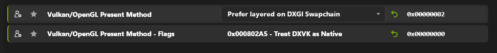
Click Apply changes. - Vulkan/OpenGL present method:
- Launch the game and check in RTSS: the API will be Vulkan, and Present Mode will switch to Hardware: Independent Flip.
If the game keeps ignoring d3d9.dll:
Some games load DirectX directly from System32, ignoring files in their own folder. To force Windows to load the local DXVK:
- Create an empty file in the game folder with the extension
.local(for example, forgame.execreate a file namedgame.exe.local). - In the registry, at:
HKLM\SOFTWARE\Microsoft\Windows NT\CurrentVersion\Image File Execution Options\
create a subkey with the exact executable name (for example,game.exe). - Inside it, create a DWORD (32-bit) Value named
DevOverrideEnablewith the value1.
📚 Sources and Useful Links
- DirectX Developer Blog: For best performance, use DXGI flip model
- Special K Wiki - Presentation Model
- DirectX 12: Presentation Modes In Windows 10
- SwapChain Science | Special K - The Official Wiki
- The Care and Feeding of Modern Swap Chains (part 3) | Games for Windows and the DirectX SDK blog
- Nvidia Profile Inspector Releases (GitHub)
This English translation was produced primarily using AI.